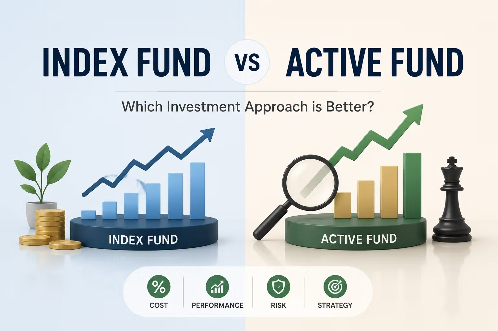

Understanding Actively Managed Funds

An actively managed fund is an investment fund in which professional managers select investments with the goal of outperforming a market benchmark. Unlike an index fund, an active fund does not simply copy the investments included in an index such as the S&P 500.
Companies like BlackRock and Vanguard, traditionally pioneers of using index fund investing, are starting to sell these funds more to insititutional clients like Pension Funds who are looking for higher returns.
How Do Active Funds Work?
Active fund managers research companies, industries, and economic conditions before deciding which investments to buy or sell. Their decisions may be based on company earnings, economic forecasts, market trends, and the risks associated with particular investments.
Common Features of Active Funds
- Professional managers select the fund's investments.
- The fund attempts to outperform a particular benchmark.
- Investments may be bought and sold more frequently.
- Fees are generally higher than those charged by index funds.
- Performance depends partly on the decisions of the fund manager.
Advantages and Disadvantages
| Advantages | Disadvantages |
|---|---|
| Opportunity to outperform the market | Higher management fees |
| Managers can respond to changing market conditions | No guarantee of outperforming the market |
| Access to professional investment research | Performance may depend heavily on one manager |
| Some funds specialize in particular strategies | Frequent trading may create additional costs |
Active Funds Compared With Index Funds
| Feature | Active Fund | Index Fund |
|---|---|---|
| Investment selection | Selected by professional managers | Based on the investments in an index |
| Main goal | Outperform a market benchmark | Match the performance of a benchmark |
| Typical fees | Higher | Lower |
| Trading activity | Generally more frequent | Generally less frequent |
| Manager influence | High | Low |